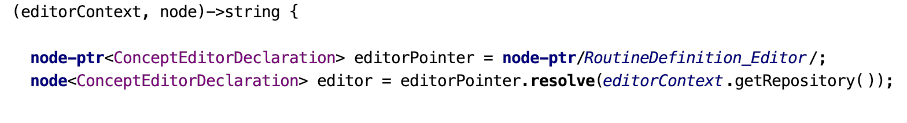

The node-ptr/XXX/ expression can be used to conveniently obtain node pointers. These pointers reprresent the desired node without actually loading them into memory. Use the resolve method to load a node identified by a pointer.
